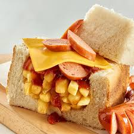

BunnyChow

BunnyChow
A classic Meal in the townships of South Africa. BunnyChow is a fast food
Meal which brings in a lot of different flavours but is solid like a burger.
Ingredients
- potatoes
- cheese
- Bread
- tomato sauce
- sun flower cooking oil
- polony
- Russian
Steps
- pour your cooking oil in a pan so that in can boil up
- peel and chop your potatoes into chips then throw them in that pan of cooking oil
- cut your bread into a quater size then open it up
-
put your chips and cheese and sauce on the chips
- put your Russian and serve